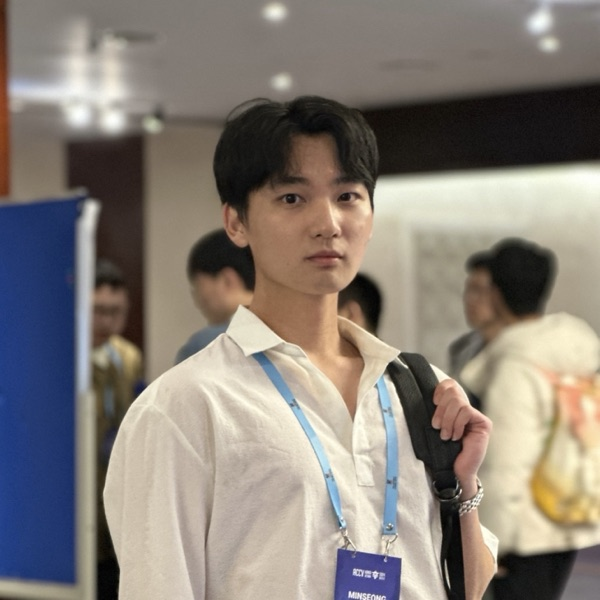
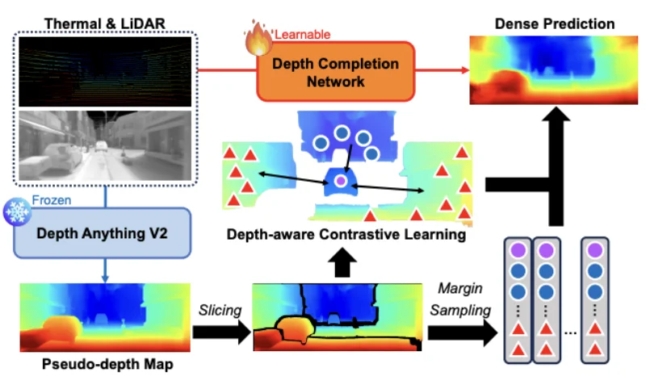
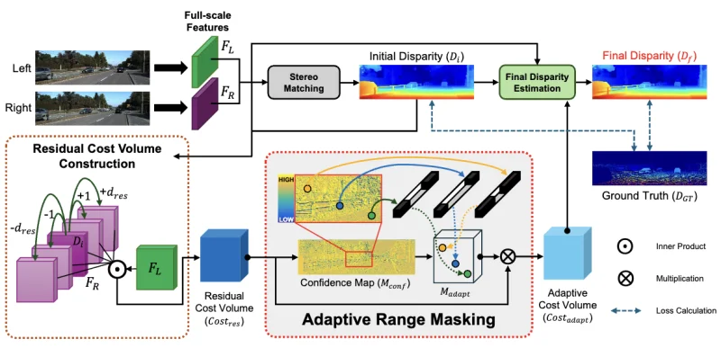
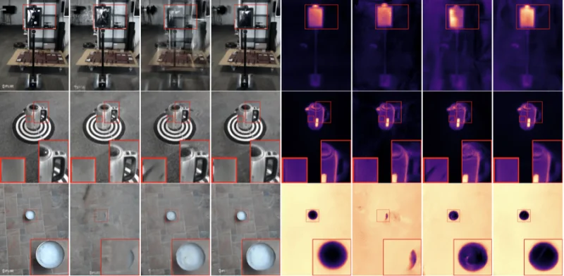
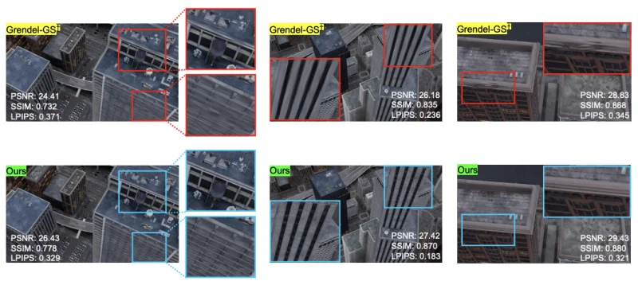
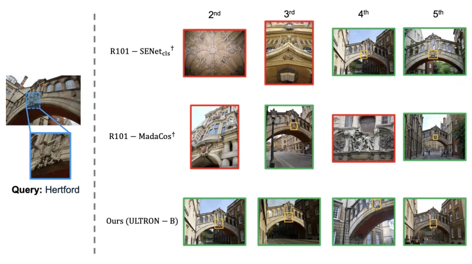

Preprint
Minseong Kweon
M.S. Student in Robotics · University of Minnesota, Twin Cities
I'm an M.S. student in Robotics at the University of Minnesota. I'm currently a research intern at the UPenn GRASP Lab, advised by Prof. Lingjie Liu.
Recently, I worked closely with Prof. Zhiwen Fan at Texas A&M and Prof. Junaed Sattar at UMN. Prior to that, I received my B.S. from Pusan National University under the supervision of Prof. Jinsun Park.
My research interests lie in physical scene understanding, with a focus on how machines (and robots) perceive the world around them, reason about it, and mitigate erroneous actions to interact with us reliably.

News
- DarkVGGT has been accepted to NeurIPS 2026! 🎉
- Joined the GRASP Lab at UPenn as a research intern with Prof. Lingjie Liu.
- OceanSplat has been accepted to AAAI 2026! 🎉
- MrGS won the Best Poster Award at the Thermal Infrared in Robotics Workshop, ICRA 2025! 🏆
Under Review

Publications
- Conference
- Journal
- Workshop
NeurIPS 2026
DarkVGGT: Seeing Through Darkness Using Thermal Geometry without Daylight Tax
Conference on Neural Information Processing Systems (NeurIPS), 2026
AAAI 2026
OceanSplat: Object-aware Gaussian Splatting with Trinocular View Consistency for Underwater Scene Reconstruction
The 40th AAAI Conference on Artificial Intelligence (AAAI), 2026

RA-L 2025
CAR-Stereo: Confidence-aware Adaptive Disparity Refinement for Real-time Stereo Matching
IEEE Robotics and Automation Letters (RA-L), 2025

ICRA 2025 Workshop🏆 Best Poster Award
MrGS: Multi-modal Radiance Fields with 3D Gaussian Splatting for RGB-Thermal Novel View Synthesis
ICRA 2025 Thermal Infrared in Robotics Workshop

Eurographics 2025
NoiseGS: Boosting 3D Gaussian Splatting with Positional Noise for Large-Scale Scene Rendering
Eurographics 2025, Short Papers

ACCV 2024
ULTRON: Unifying Local Transformer and Convolution for Large-scale Image Retrieval
Asian Conference on Computer Vision (ACCV), 2024
Academic Service
- Reviewer – ICLR (2027), AAAI (2027, 2026), ACCV (2026)